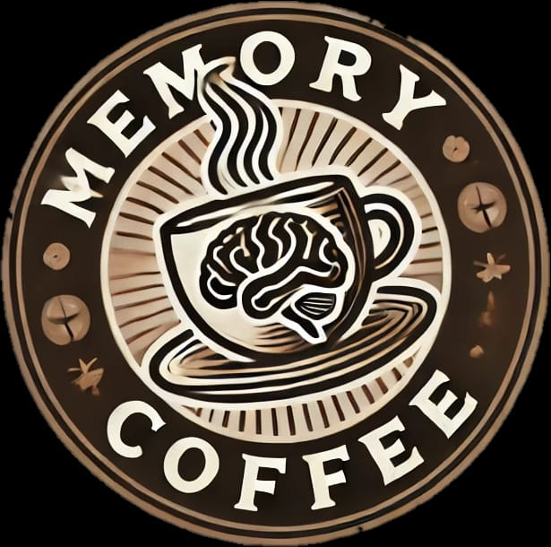

Coffee Shop Website Overview This is the official website for Memory caffee , designed to provide customers with a seamless and inviting online experience. The site features a modern, user-friendly interface where visitors can explore the menu, learn about the café’s atmosphere, and discover our unique offerings. The website is fully responsive and optimized for all devices, ensuring a smooth experience whether you’re browsing from a desktop, tablet, or mobile.
Features:
1-Homepage: A welcoming hero section with a beautiful photo of the café and a short introduction to the brand.
2-Menu Section: An interactive menu with detailed descriptions of our coffee and pastry options, including price and dietary information.
3-Branch: A dedicated page highlighting the second-floor sky view with a gallery of stunning photos to entice visitors.
4-Ubout Us: story to open coffee
5-Contact us: send feedback
Reviews: A section showcasing genuine customer feedback, helping to build trust and encourage new visits.
Contact info : Easy-to-find contact details and an interactive map to guide customers to our location.
Online Ordering (optional): A simple and secure ordering system (if implemented), enabling customers to place orders for pick-up or delivery.
